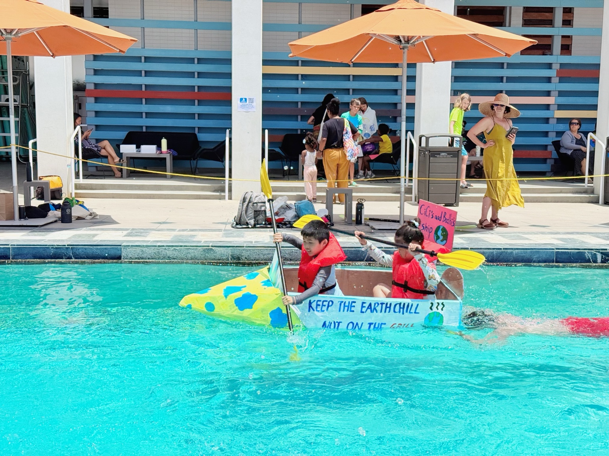

Innovation Lab
Future worlds, sustainability, design ideas, and systems thinking.
A living archive of curiosity, creativity & future thinking
Ideas become worlds.
Explore Projects
Featured Case Studies
Future Worlds Series
Museum Collections
Future worlds, sustainability, design ideas, and systems thinking.
Engineering builds, 3D printing, prototypes, textiles, and handmade work.
Birds, animals, aurora, houses, watercolor, and holiday cards.
Africa, Switzerland, Iceland, Japan, museums, culture, and learning beyond classrooms.
Graph books, videos, presentations, speeches, and creative writing.
About
Cecilia Growth Museum is a digital archive of projects, process, storytelling, and exploration. It is built to grow year after year.